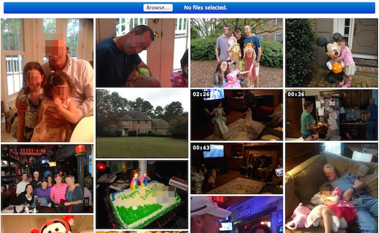

Private Photo Albums

Introduction
Everyone has a web-connected camera and sharing via text, email, and social media has never been easier. This age of communication presents a new set of pitfalls ranging from embarrassing to criminal. Sending photos may be easy but balancing privacy, ownership, simplicity, and convenience isn't:
- Text messages and emails are mostly private but don't organize well, while most social media organizes better but isn't private
- Facebook has privacy settings which are misused and changed so often they introduced and recommend a privacy check-up
- Facebook (owner of Instagram and WhatsApp) claims a broad license on the photos you upload and only declares how it currently uses it
- Snapchat charges $0.33 for a replay so pictures may be living somewhere long after they're sent
These tools and others like them are built to turn a profit through generating page views and gathering data for corporate and government partnerships. I'm not against companies turning profits, but in this case it conflicts with my desire for a simple, private, available-everywhere photo album.
My family doesn't share our photos on social media,
and I won't do so on their behalf.
The Solution
I built my own private photo album on Amazon Web Services. Unlike Facebook and Twitter, AWS is a business (not social) platform, so privacy is a major priority, and it would never claim a license on my data. My remaining goals were simplicity and convenience:
- Display a wall of videos and photos with no wasted space
- Provide my family access to it anytime/anywhere
- Allow them to upload new videos and photos
The Implementation
The software is a combination of free libraries and AWS services coordinated by my application:
- Amazon S3 stores and protects the photos and videos better and much cheaper than services like iCloud and Dropbox
- Elastic Transcoder converts videos into Apple's HLS video format for efficient streaming
- FlowPlayer adds HLS support for Chrome, IE, and Firefox via Flash
- Cloudfront serves the photos and videos to authorized users
- Gamma Gallery provides a clean, responsive presentation via jquery and masonry
- Ruby on Rails and aws-sdk bring everything together into a private website
I encountered a few technical "challenges" along the way which I plan on writing about in more detail later:
- Authorizing CloudFront requests with signed-cookies
- Uploading files directly to Amazon S3
- Automating the Elastic Transcoder
- Adding video support and metadata editing to Gamma Gallery
- Automatically loading more images as you scroll
Conclusion
Watching everyone in the photos change while scrolling down is a pleasant trip. I'm not sure if my whole family will use it, but I'll continue adding our photos and videos, so in 5/10/?? years we can look back. I may even start other albums for my extended family and close friends.
The project came together pretty quickly over the last couple weeks, but I already have some ideas for version 2:
- Clean up the permissions interface
- Improve touch's zoom user-experience
- Integrate the uploading UX more intimately
- Tag by people and events
- Filter by tags into more specific albums
- Auto-tag people via facial recognition
If you're interested, here are some of my other projects: